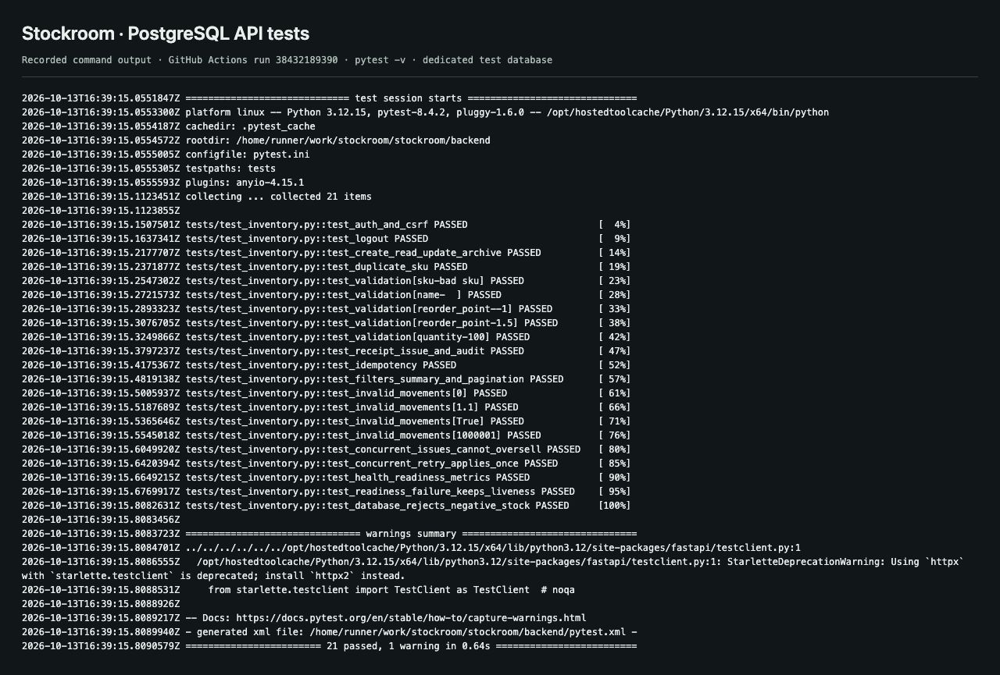
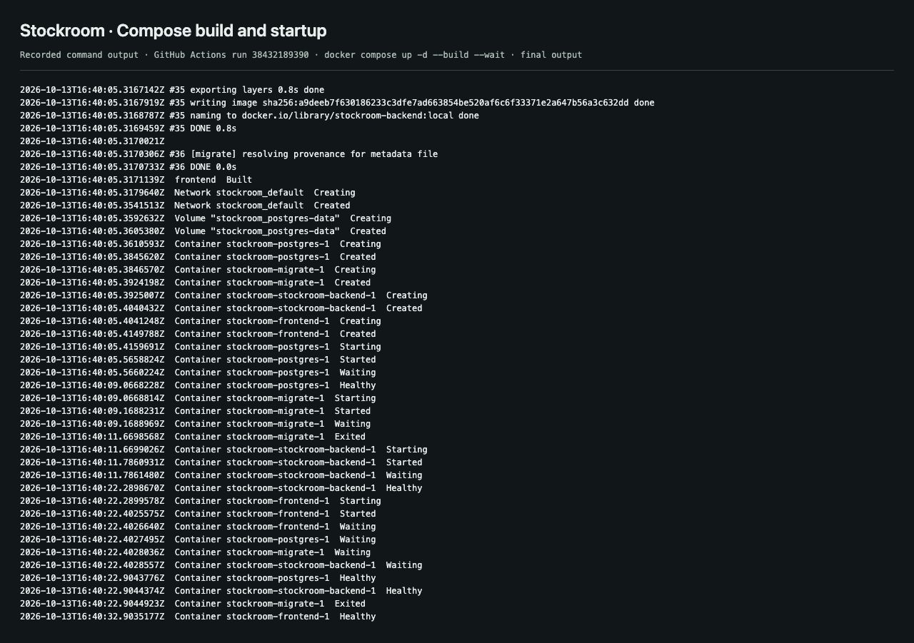
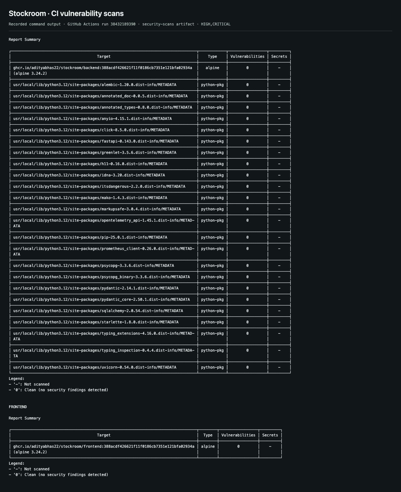
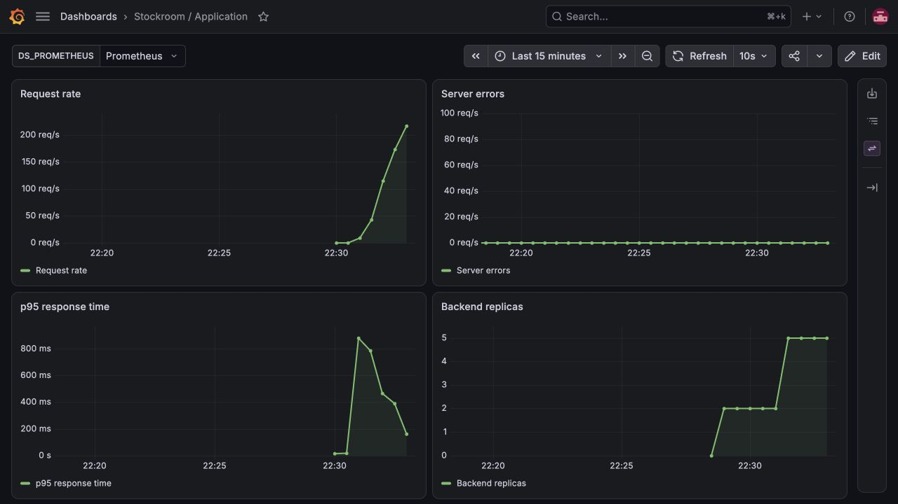
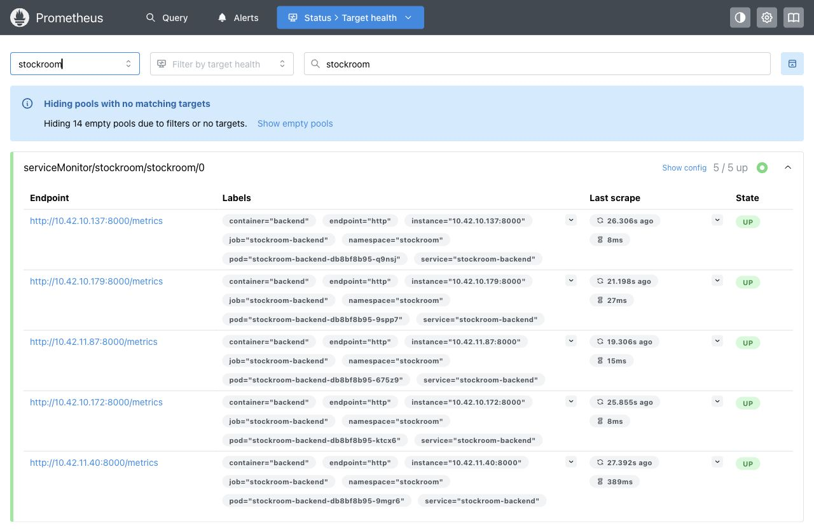
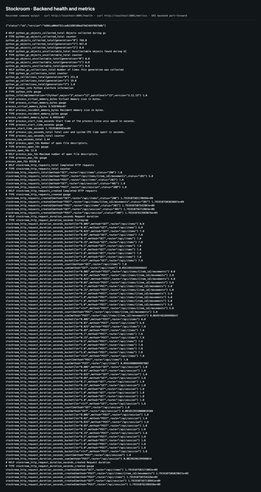
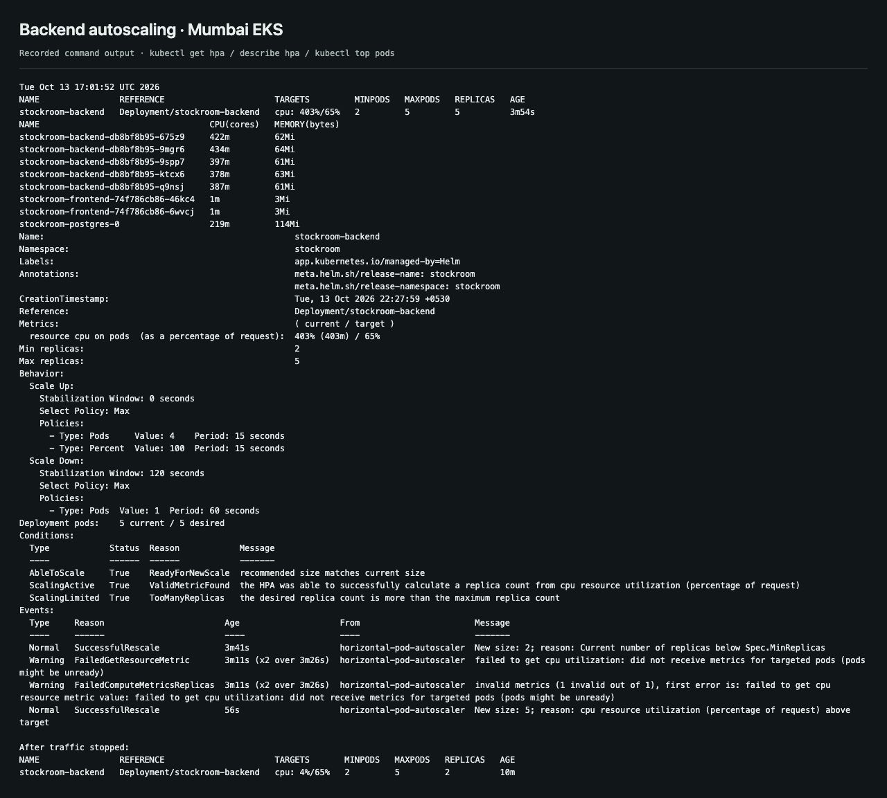
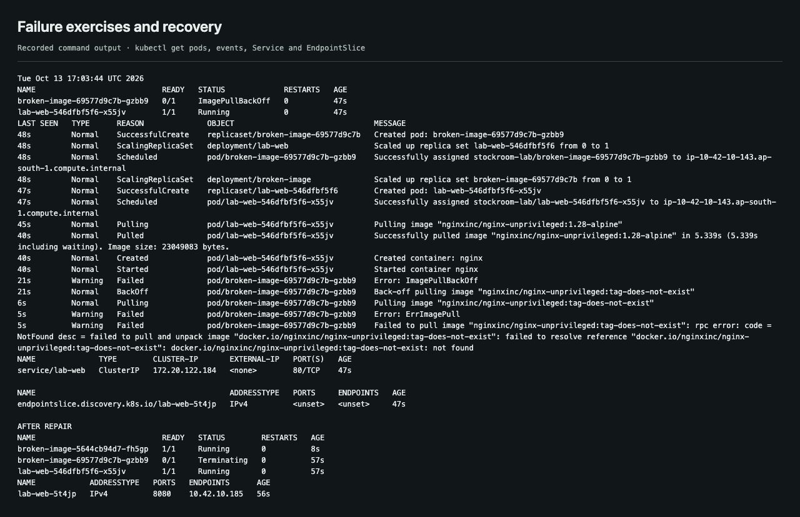
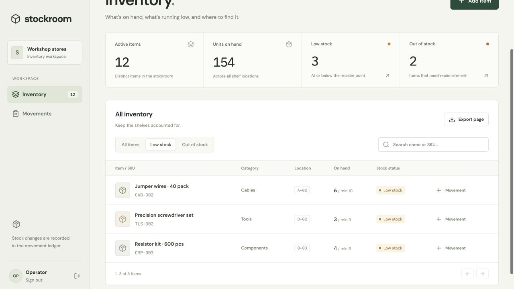

Stockroom
execution record.
A workshop inventory application, tested locally and deployed to a temporary AWS Kubernetes cluster. Source, screenshots and recorded results are collected here.

Submission evidence
Each section corresponds to one module in the published rubric. The records distinguish local checks from the AWS run.
01Application+
FastAPI, React and PostgreSQL; inventory, stock movements and archive history.


02Tests+
21 API tests passed against PostgreSQL; three Chromium tests passed in the release pipeline.

03Git history+
Public repository with more than ten meaningful commits and tracked source configuration.

04Docker+
Backend and frontend images built successfully; Compose started PostgreSQL, API and frontend.


05CI and image publishing+
The release pipeline passed and published both images with the full commit SHA.


06Security scans+
Trivy scanned operating-system and application packages in both images. Neither scan found HIGH or CRITICAL vulnerabilities. This is a result for those images and that scan database, not a guarantee that all vulnerabilities are absent.

07Terraform and AWS+
Real infrastructure in Mumbai: VPC, two public and two private subnets, EKS and managed workers. Teardown and a separate resource audit followed the run.


08Kubernetes and Helm+
Two frontend and two backend replicas, PostgreSQL on encrypted EBS, ClusterIP Services and Traefik ingress. Helm revision 2 installed the published change.


09Monitoring and recovery+
Prometheus scraped five healthy application targets during load. Grafana displayed traffic, latency and replica changes. The invalid-image and Service-selector exercises recovered successfully.










10Deployment walkthrough+
The edited browser recording shows the live local app, source change, successful pipeline and live monitoring. Clearly labelled archive sections cover the published image, EKS rollout and cleanup from 13 October. The video is 2:44, 1920×1080, with captions and no audio.


Capture format: application, console, GitHub and dashboard images are direct browser screenshots. Command-output captures render saved logs and are accompanied by their raw text; they are not native terminal-window screenshots. The video records live local interactions and monitoring on 14 October; the earlier AWS evidence is labelled with its 13 October date. The submission form has not been sent.
Video walkthrough
The local application remains available at localhost:3000 with workspace password stockroom-local. The temporary AWS deployment has been removed.